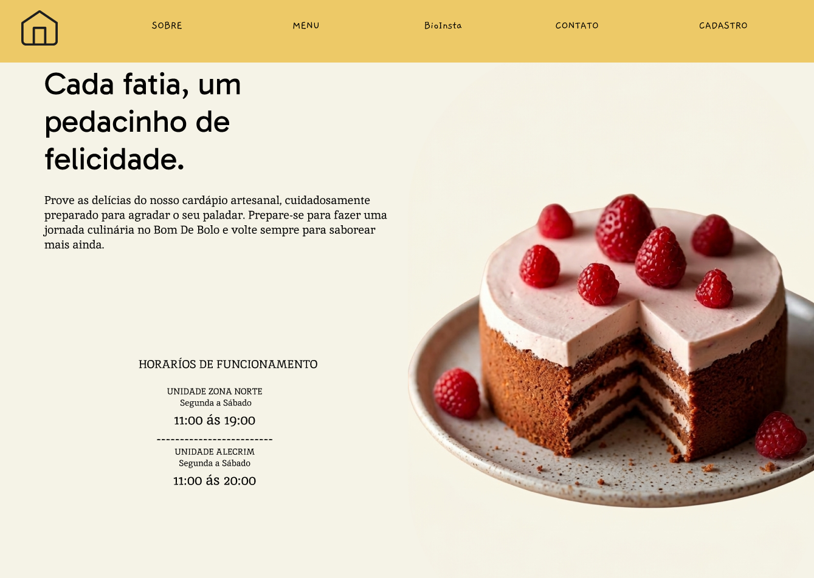

01MEU PROJETO FAVORITO
Bom De Bolo
Este foi o meu primeiro projeto na Rede SENAC, proposto e apresentado para a professora Gabi, de TI (Técnico em Informática). Eu o realizei junto do meu companheiro, Cerlan Miguel, e por esses fatores ele se tornou o meu projeto favorito. A proposta é um aplicativo para a nossa loja, que mostra tudo o que o espaço físico oferece. Nele, você pode fazer pedidos e conferir tudo o que produzimos.